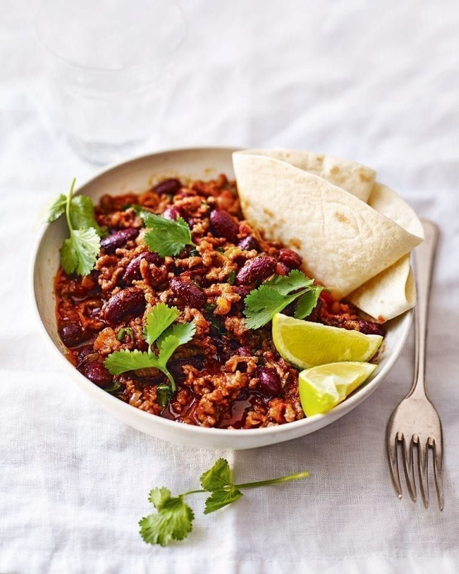

Quick chilli con carne

Description
When you fancy a chilli con carne but don’t have the time for slow cooking – this is the quick chilli recipe for you.
Ingredients
- 1 tbsp olive oil
- 2 large onions, finely chopped
- 3 garlic cloves, crushed
- 500g British beef mince
- 1 tbsp ground cumin
- 1 tsp smoked paprika
- ¼ tsp ground cinnamon
- 400g tin chopped tomatoes
- 250ml fresh beef stock
- 400g tin red kidney beans, drained and rinsed
Method
- Heat the oil in a large sauté pan over a medium-high heat and add the onions. Cook for 10 minutes, stirring often, until softened and translucent. Add the garlic and fry, stirring, for 2 minutes more until fragrant, then tip out into a bowl.
- Turn up the heat to high, add the beef to the pan and season well, pressing it down with a wooden spoon and breaking it up so it browns all over. When it’s browned, tip out the juices from the pan and discard, then return the onions to the pan with the cumin, paprika and cinnamon. Cook, stirring, for 2-3 minutes until fragrant, then add the tomatoes with a pinch of sugar and the beef stock.
- Bring to a simmer and cook, stirring occasionally, for 20-25 minutes until the beef has taken on the flavours of the spices and the sauce is reduced and thick. Add the kidney beans and cook for 5 minutes more, then taste, season and serve with your choice of accompaniments.
Home